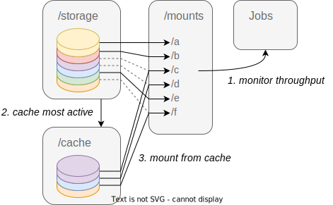

Scratch manager#
Scratch manager is a daemon which automates caching for read only dataset on a system configuration with a slow and a fast storage device. In a typical HPC environement, the slow storage is a shared network filesystem and the fast one is an ssd drive on the compute node. The scratch manager monitors read throughput on a list of dataset stored on the large but slow storage and moves the most active ones to a faster but limited cache storage. The current implementation uses squashfs images to bundle together the files from each dataset. This provide the following advantages:
Large datasets with many small files are bundled into one container file on the underlying storage.
The cache is shared across users and jobs
Once mounted, dataset content is accessible via the familar posix filesystem api.
Cached images are mounted over the mountpoint of the non-cached version. Caching happens live and transparently for users, even if files are currently open.
The daemon relies on readily available linux io statistics and does not require dependencies other than python 3.
Principle#
The general logic of the code is an infinite loop of the following steps:
Check and handle added and deleted datasets
Update throughput statistics
Compute the optimal combination of dataset to cache or drop
Unmount and delete datasets to drop from cache
Copy and mount dataset to cache

Installation#
Clone the repository and move into it:
git clone https://github.com/CEA-LIST/scratch_manager.git
cd scratch_manager
Build and install the package for RPM-based distributions:
# Install build dependencies
sudo dnf install git python3-rpm-macros python3-wheel \
python3-setuptools python3-setuptools_scm dnf-utils rpmdevtools
# Generate rpm package
mkdir -p rpmbuild/{BUILD,RPMS,SOURCES,SPECS,SRPMS}
sed "s/Version:.*/Version: $(python3 -m setuptools_scm)/g" \
packaging/scratch_manager.spec > rpmbuild/SPECS/scratch_manager.spec
python3 setup.py sdist --dist-dir rpmbuild/SOURCES
rpmbuild --define "_topdir $PWD/rpmbuild" -bb rpmbuild/SPECS/scratch_manager.spec
# Remove build dependencies if desired
# sudo dnf remove git python3-rpm-macros python3-wheel \
# python3-setuptools python3-setuptools_scm dnf-utils rpmdevtools
# Install package
sudo dnf install rpmbuild/RPMS/noarch/*.rpm
Build and install the package for DEB-based distributions:
# Install build dependencies
sudo apt install -y git python3-setuptools-scm python3-pip
# Generate deb package
python3 -m pip install -U virtualenv build installer
python3 -m build --wheel
python3 -m installer dist/*.whl --prefix=/usr --destdir=debroot
mkdir -p debroot/DEBIAN
sed "s/Version:.*/Version: $(python3 -m setuptools_scm)-1/g" \
packaging/control > debroot/DEBIAN/control
install -o root -m 0644 -D scratch_manager.service \
debroot/usr/lib/systemd/system/scratch_manager.service
dpkg-deb --root-owner-group --build debroot/ \
scratch-manager_$(python3 -m setuptools_scm)-1_all.deb
# Remove build dependencies if desired
# sudo apt autoremove -y git python3-setuptools-scm python3-pip
# Install package
sudo dpkg -i scratch-manager_*.deb
Edit the /etc/scratch_manager.conf and set the daemon configuration:
; Directory containing squashfs image files.
datadir = /data/scratch_manager
; Directory to use for caching image files.
cachedir = /scratch/scratch_manager
; Directory in under which dataset image files will be mounted, the
; daemon will create a subdirectory for each image.
mountdir = /media
; Maximum allowed cache utilisation (specify the unit from 'GB', 'TB' or '%').
capacity = 25%
; Sliding window in seconds over which to aggregate throughput stats.
period = 600
Ensure the daemon starts after the filesystems it depends on:
systemctl edit scratch_manager.service
[Unit]
Requires=home.mount
After=home.mount
Enable and start the daemon:
systemctl enable --now scratch_manager.service
Adding datasets#
You can generate an mksquashfs image from the content of a directory using the mksquashfs command.
Before generating the image, make sure the permissions are correct, for example with:
find . -type d -exec chmod 0755 {} \;
find . -type f -exec chmod 0644 {} \;
Then generate the archive file
mksquashfs . ../dataset_name.squashfs
The following arguments for mksquashfs might be relevant in most situations:
-all-root: set owner and group of all files to root-progress -info: show progress bar-comp lzo -noD -noF: disable compression of data blocks and fragments and use lzo compression elsewhere-no-duplicates: don’t try to detect and deduplicate files-no-xattrs: disable support for extended attributes-no-exports: disable support for the image being re-exported via nfs-no-sparse: don’t try to detect and optimize sparse files
Once the image is ready, move it inside the directory specified by --datadir, it should be detected and mounted by the daemon automatically.
Make sure the image file is already on the same filesystem so that the move is atomic.
Otherwise, the daemon might try and fail to mount the image while it is being transfered.
Removing a dataset#
Simply remove the dataset image from the datadir, the daemon will detect it and clean up the caches and mount points.
License#
This program is distributed under the CeCILL-C license.
Known issues#
Older linux kernel versions do not record io stats for disk images, so caching will not work.
The daemon leaves inactive images in cache so long as they do not exceed the capacity allowed. This reduces the available free space available for other programs. It is safe to manually delete cached images but the daemon will reallocate the free space anyway.
Pinning a dataset to cache is not yet implemented.
It may take a little while until a non-cached dataset gets selected for caching, transfered and mounted. During that time, data will be read from the image stored on the slow storage.
The daemon is currently single threaded. It will hang while dataset images are being transfered.
Packaging is borken on ubuntu (https://github.com/pypa/installer/issues/176)